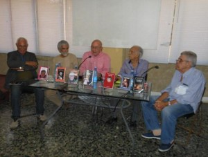

By: Camilo García Lopez-trigo.

In the hands of its Director, the poet Alex Pausides, the meeting was dedicated to Luis I Marré - with endearing words of Cesar Lopez - and there were new editions of books of poetry of Miguel Barnet, Guillermo Rodriguez Rivera, Luis Rogelio Nogueras, Pedro Juan Gutiérrez, and Jamila Medina, In addition to the script of the film Strawberry and Chocolate, of Senel Paz.
Pausides stressed that all these are small books, as SurEditores has the purpose of reviving the pleasure of reading small books of poetry - because sometimes the bulky books "scare readers" - and make available to the public several key titles. Some of these books are reissues of essential poets in Cuban literature, with those who had the opportunity in 2013 share during the readings of the Poetry Friday, organized monthly in the UNEAC.
Francisco López (Sacha), who was the presentation of much of these texts, He drew the attention of the fan so different authors and generations who converged on this occasion, proving that "we are fragments of a culture and a history, continuation of the process which constitutes"of Cuban poetry.
He also stressed that "the most beautiful thing is that everything is here now because it was the dream of Alex Pausides" for more than 25 years, in Manzanillo. After two decades, SurEditores already has more of 200 titles and - according to Sacha - it being published "the best collection of poetry that is made in the country".
Luis Marré: the first poet of the "generation of the 50"
"A lover, waking up, resumes
not dream body abandoned caress.
But I've not slept, watching you.
Ah, don't wake."
(Madness, Luis Marré)
Introducing the Minimum anthology Luis Marré, Pausides referred to the active participation of the author in the process of formation of the book, who could not see the result as - after certain printing "avatars" - publication saw the light when he had already departed. "But Marré is, as she is always true poets", reaffirmed, to devote this evening of poetry lovers.
César López (National Prize for literature 1999) He was responsible for the words of tribute, with heartfelt words of having "lucky and honored to be your friend". "I marré was example of ethics", commitment to the poets who come from the country's history (…) never left the true poetry, the moral, the commitment to history and his time", highlighted.
It identified him as the first poet of "the so-called generation of the 50", He calls - in vain way, in his own words - "the first generation of poets of the triumphant revolution". Referring to the book, that he described as "dazzling", He stressed his "fidelity conceptual and endearing with the truth, as a real creature of this island"and refused to be take as a testament, because "there is no split... always is in the heart", in the mind, in the memory".
Luis Marré was born in Guanabacoa, Havana, in 1929 and was a poet, Narrator, translator and editor. Bachelor's degree in journalism at the University of Havana, He collaborated in important cultural magazines as sources, Cyclone, Monday's revolution, Union and Casa de las Américas. He worked for many years as editor-in-Chief of La Gaceta de Cuba, and his works were translated into English, French, Russian, Arabic, Hungarian, Swedish, Danish and Polish. Fighter of Playa Girón and the clean of the Escambray, He played until his death - the 31 Oct. 2013--in the Communist Party of Cuba. Among his numerous awards and recognitions, obtained in 2008 the national prize for literature.
Miguel Barnet: "my work is a consequence of those who have spoken before me"
"We have to always be
next to the roots, against the wind,
in the old docks, always,
in tow with the bums
and within each
to live
to the bottom
and nothing more"
(Death of Tirso, Miguel Barnet)
 In February of 2013 Rubén Martínez Villena UNEAC was held in the room the 50 anniversary of the publication of poems The piedrafina and the Peacock, from Miguel Barnet (Havana, 1940), the fourth publication made in 1963 the newly created Union Editorial that was seen then as new values of Cuban literature.
In February of 2013 Rubén Martínez Villena UNEAC was held in the room the 50 anniversary of the publication of poems The piedrafina and the Peacock, from Miguel Barnet (Havana, 1940), the fourth publication made in 1963 the newly created Union Editorial that was seen then as new values of Cuban literature.
In the presentation of the new edition of this text, Guillermo Rodríguez Rivera recalled those times at the beginning of the revolution, they had a very enthusiastic audience to read everything that occurred in the country and the new generation of poets was mired in a "double rail": on the one hand, "turn" the poetry that was made and, at the same time, assimilate with respect the previous work that was established as the base from which we part.
"Miguel is going to everyday life, to the language of every day", He stood out as a new element in his work at that time: It is "the reality by the sensitivity of the poet". Indicates that, Since then, is clearly observed that he handled what later called "the living source", where are interwoven experiences and words of the people. "His way of culture goes through Ethnology" and in this collection of poems can be seen the work that would later produce, highlighted.
Barnet thanked SurEditores for the reissue of this text which assessed "naive poetry, almost innocent, childish". Although his first poems were, "this book is not so different from poetry did then, only here's the matrix", said, to underline that its publication "catapulted him to this world of which I live" and was the result of the many poetry readings that took place while he was trained as an ethnologist, the works of Nicolás Guillén, Fayad Jamis, among others.
"The generation of the" 50 is that always gave you homage and tribute, because they had to write poetry in difficult times, When they had to pay for their publications with the personal expense", said. "They were my friends, those who went to not only my poetry, but my work in general. We were younger when that generation was still young and plethoric, so we could get the best of it".
"Denying a generation is an absurdity and is falling into a huge vacuum", reaffirmed, with the conviction that his work "is a consequence of those writers who have preceded me".
At the end, delighted lovers of poetry there assembled by reciting his poem Where are you?, He takes the title of the piedrafina and the Peacock. "Poetry is another thing (…) without poetry there is no possibility of what one means to reach a dimension that can comply with a parable", reaffirmed.
More generational visions for Cuban poetry
"For now
Immigration has been arrested
between the kitchen and the room
which have called fourth
and your grandmother
cut the red pepper
While my moans you sofocas with your body"
(Wonder wall, Jamila Medina)
The narrator and essayist Francisco López Sacha was commissioned to present other texts published by SurEditores for this book fair 2014, with reissue of well-known authors and more recent generations.
Head of carrot It is the poetry book that earned him Luis Rogelio Nogueras (Havana, 1944-1985) the David Prize UNEAC 1967, your first call. To the present, Sacha called him "outstanding book of poems", that shows his traditional style of "argument between between fabulesco language he creates and the Cuban slang". "It's a poetry made with the word of the day, identified with personal experiences", highlighted, with an aesthetic that dazzled then and continues to do so among the Cuban readers.
On the reissue of El libro rojo de Guillermo Rodríguez Rivera (Santiago de Cuba, 1943), that won the prize House mention in 1970, He said represent "a new poetry for the revolution and a revolution for new poetry", in a maze of relationships between the poet, the reality and the political process that existed. He stressed that this work had "an extraordinary influence on the generational group that followed, working the way of the Colloquium, musicality and harmony, not only the bare word".
Was also presented the peculiar poetry book Dragging leaves into the darkness, Pedro Juan Gutiérrez (Matanzas, 1950), who is known more for its narrative despite having a significant poetic works. In this respect, Sacha said that the author is "son of the wave of that poetry was looking for real estate in the intimacy of the human being (…) to the certainty of the passing of time and the pain which means to live". On the text, he pointed out that "it is the work of a cult poet", penetrated by what he called 'review', with an image of the world so conceptual that achieves an act of much greater communication.
And to finish with the new poetry books, was presented The heart of cabbage and other lies Jamila Medina Ríos (Holguin, 1981), He said 'is this colloquium to paroxysm, to a special erotic tempo". In his poetry, "it is through love, delivery"in which the world of culture and history in a sample of the most recent poetry produced in the country is mixed, as a continuation of the process of artistic creation.
The last literary novelty presented this afternoon by the collection SurEditores was the script for the film Strawberry and Chocolate, of Senel Paz (Promotion, 1950), that it was rated by Sacha as "one of the great Cuban cinema scripts, along with memories of underdevelopment and the last supper", the best example is the national Critics Award achieved by this book in the 2013. Based on the short story Wolf, the forest and the new man, from the author, the film script created another story from the same event and the same circumstance that, without a doubt, has become point of reference obliged for the artistic and literary creation of Cuba in recent decades.


Recent Comments